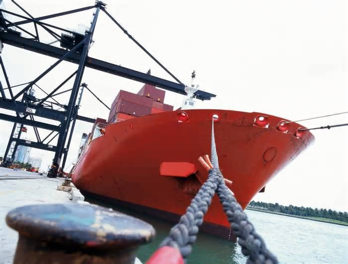

Las exportaciones de Castilla-La Mancha crecen un 11,5% hasta septiembre y alcanzan los 9.282 millones de euros

En septiembre de 2026, los productos agroalimentarios ocuparon la primera posición de las exportaciones regionales con 2.796,6 millones de euros, representando el 30,1% del total exportado por ...
En septiembre de 2026, los productos agroalimentarios ocuparon la primera posición de las exportaciones regionales con 2.796,6 millones de euros, representando el 30,1% del total exportado por ...
Noticia publicada por Europa Press. Consulta el artículo original en Europa Press para más información.